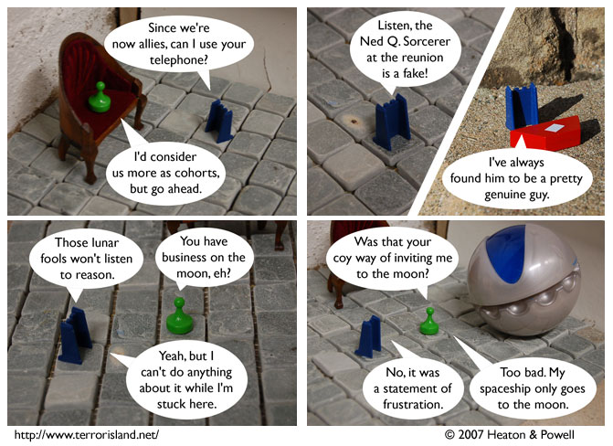

Strip #132
— Monday, April 16, 2007
His phone also goes only to the moon.
Notes, Thoughts, &c.
Ben’s Notes
This strip was inspired by the fact that my favorite type of fruit juice is guava juice. Orange juice is also good.
Lewis’s Notes
This strip was not inspired by any juices whatsoever. But it was brought to you by the letter π and the number e.